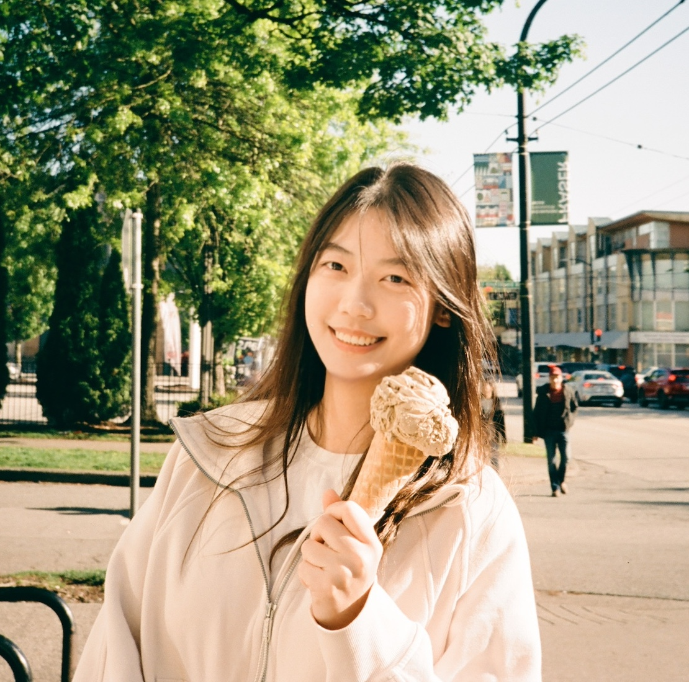

EgoX: Building the Foundation Models of Human Experience
NeurIPS 2025 Workshop
Introduction
This workshop aims to bring together researchers working on ...
Schedule
TBD
Invited Speakers
TBD
Challenge
Call for particpations: The workshop will host a competition focused on ...
Submission site: TBD
Important Dates
| Release of train sets | TBD |
| Release of test set | TBD |
| Submission deadline | TBD |
| Workshop date | TBD |
Organizers

Shulin Tian
Nanyang Technological University

Ruiqi Wang
Simon Fraser University

Jingkang Yang
Nanyang Technological University
Senior Organizers
Ziwei Liu
Nanyang Technological University
Dima Damen
University of Bristol
Acknowledgments
We thank 3dv-in-ecommerce for the webpage format.